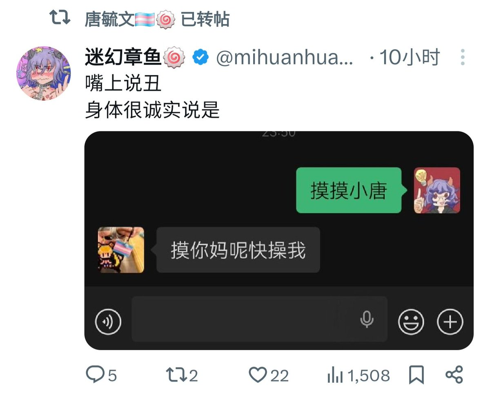

Shiori
@h191980276
@beyondr3pairr 你觉得这个事情有任何讨论的余地吗

拼接碎片 - BeyondR3pairr
@beyondr3pairr
这件事让我毛骨悚然的地方就是这里 觉得你“无药可救”了自己“无能为力”了只能"为了你好"把你送进去的味道实在是太相像了 更别提还做作的要演一出“我不忍心所以让别人代劳” 想要她活下来是她的意愿还是你的意愿自己应该清楚吧
当然这个问题更棘手的地方是我们到底应该如何应对身边“死意已决”的人 https://t.co/0P3YRDf2Ji